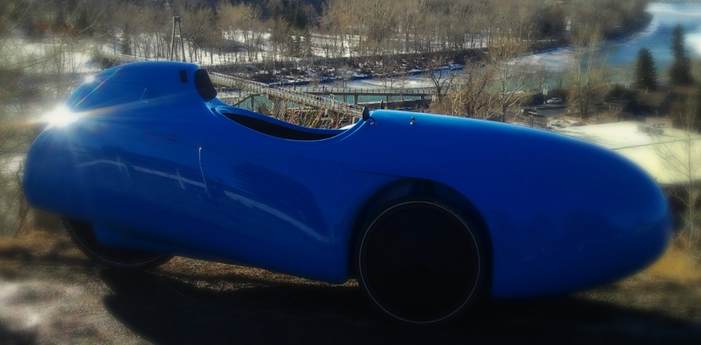
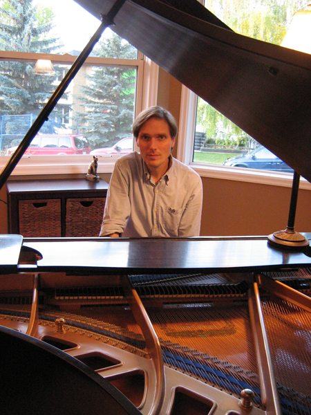
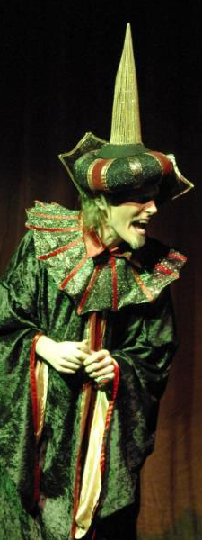
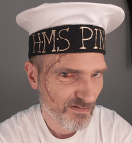
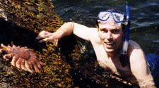
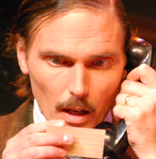

I'm a composer, pianist, vocalist, actor, and former software developer. I live in Victoria, British Columbia (Canada), through which I prefer to travel in my velomobile, dubbed the "Blue Bullet" by local media.